Look n°21
Salle à manger de Noël blanche et dorée
Une salle à manger de Noël tout en blanc et doré : table effet marbre, chaises bouclées, lustre à globes, sapin enneigé et sous-assiettes dorées. Voici les articles pour recréer ce look chez toi.
Prix au 10/11/2026
-
Table à manger ovale extensible effet marbre, 160 à 200 cm
Plateau ovale blanc veiné de gris, 2 pieds en panneaux de bois clair posés en biais. 160 à 200 cm de long, 90 cm de large, 75 cm de haut. Sur l'image, la table paraît plus large : la vraie fait 90 cm de large.
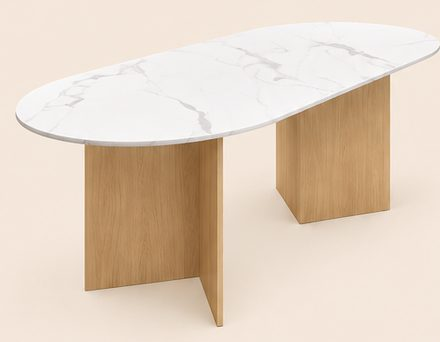
-
Chaises en tissu bouclé blanc cassé, pieds en bois (lot de 6)
Dossier arrondi à côtes verticales, sans accoudoirs, 4 pieds fuselés en bois clair. 82 cm de haut, assise à 49 cm.
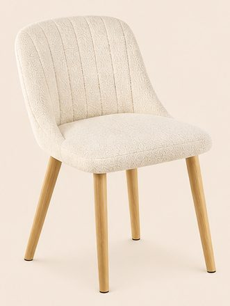
339,99 €Voir sur Amazon -
Lustre 8 globes en verre opale et laiton doré
Globes blancs de 15 cm sur des bras dorés en étoile. 93 cm de large, 65 cm de haut, tige réglable.
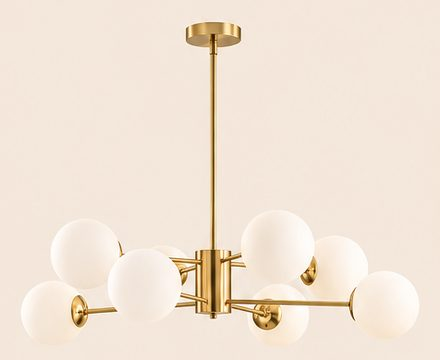
199,98 €Voir sur Amazon -
Miroir rond lumineux LED, Ø 80 cm
Miroir sans cadre, halo de lumière chaude tout autour.
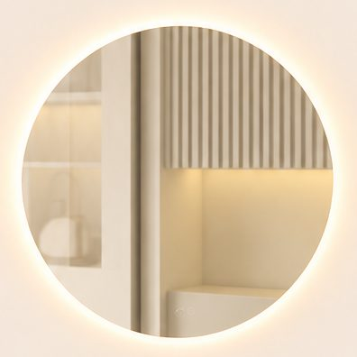
104,90 €Voir sur Amazon -
Buffet blanc à portes cannelées, pieds dorés
2 portes à fines rainures verticales, boutons ronds et pieds dorés. 80 × 39 × 76 cm.
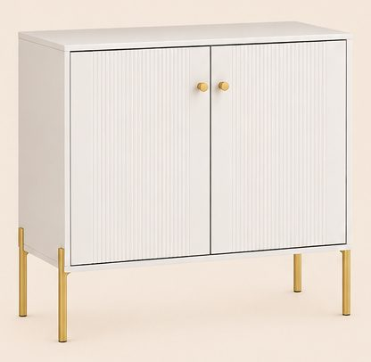
79,90 €Voir sur Amazon -
Sapin de Noël enneigé lumineux, 180 cm
Branches floquées de neige, LED blanc chaud intégrées, pied en métal. 115 cm de large à la base.
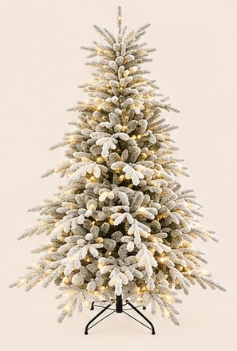
129,90 €Voir sur Amazon -
Boules de Noël blanches, champagne et dorées (lot de 72)
Boules mates, brillantes et ciselées, étoiles et petits sapins, de 3 à 8 cm.
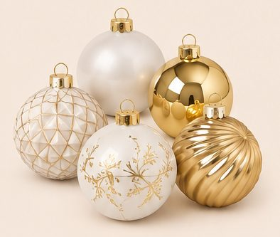
24,99 €Voir sur Amazon -
Guirlande de sapin lumineuse, 5 m
Branches de sapin épaisses et 100 LED blanc chaud.
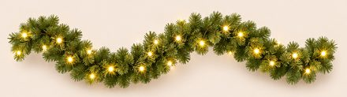
27,99 €Voir sur Amazon -
Sous-assiettes dorées à bord ondulé, Ø 33 cm (lot de 6)
Assiettes de présentation dorées effet récif, rayures en relief.
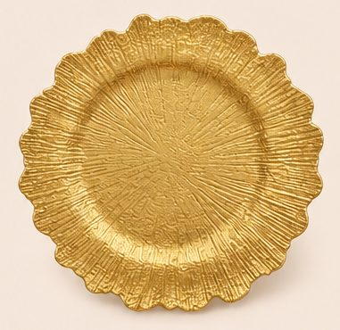
28,13 €Voir sur Amazon -
Candélabres dorés à 3 branches (lot de 2) et bougies LED
Candélabre en U doré de 24,5 cm. Bougies blanches à flamme vacillante de 24 cm, vendues par 4 : en prendre 2 lots pour 6 bougies.
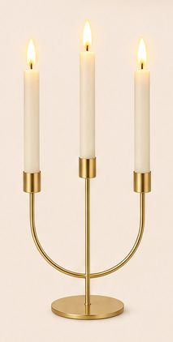
-
Vase blanc cannelé et hortensias blancs
Vase en céramique blanc mat à rainures, 20 × 14 cm, et bouquet de 5 hortensias blancs de 51 cm.
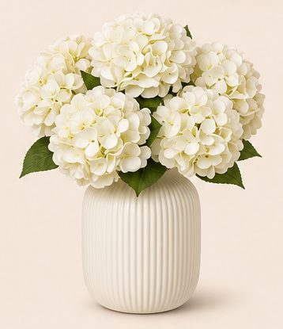
-
Grand tapis crème à poils courts, 200 × 280 cm
Crème uni, doux, sans motif.
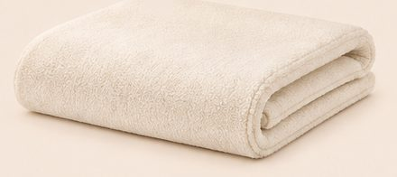
67,90 €Voir sur Amazon -
Olivier artificiel 150 cm et cache-pot noir Ø 25 cm
Olivier au tronc fin, feuillage vert gris et petites olives, livré dans un petit pot noir. Le grand pot de l'image est le cache-pot : Ø 24,7 × 23,3 cm, gris anthracite presque noir. Les petites lumières dans l'arbre ne sont pas fournies.
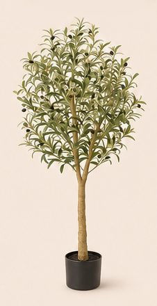
Enregistrer ce look sur Pinterest
Comment naît un lookComment chaque article est choisi, mesuré et vérifiéImage d'inspiration générée par IA. Prix indicatifs, revérifiés toutes les deux semaines.